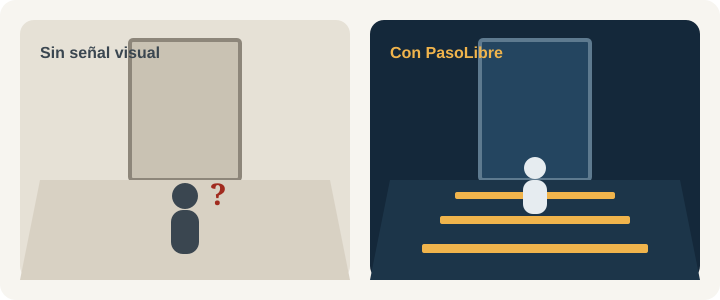

Fisioterapia y Parkinson · Quito
El congelamiento de la marcha no ocurre en la sala de terapia: ocurre en la puerta
PasoLibre es un concepto que proyecta líneas de luz en el piso de pasillos y puertas para que las personas con Parkinson retomen el paso. Fijo y siempre activo: el paciente no tiene que encender nada.
- Basado en señales visuales, una técnica de fisioterapia estudiada
- Sin datos de salud de pacientes
Qué es
¿Qué es el congelamiento de la marcha (freezing) en el Parkinson?
El congelamiento de la marcha (en inglés, freezing of gait) es un bloqueo breve y repentino en el que la persona con Parkinson siente que los pies se le “pegan” al piso y no puede dar el siguiente paso. Suele aparecer al iniciar la marcha, al girar o al cruzar una puerta o un pasillo estrecho, y aumenta el riesgo de caídas.
Dónde aparece
En umbrales, giros y espacios estrechos: justo donde la terapia de la clínica no llega.
Qué ya funciona
La fisioterapia con señales visuales, como líneas en el piso, es una técnica estudiada para el congelamiento.
Qué agrega PasoLibre
Convierte esa señal en algo fijo en el lugar exacto del bloqueo, sin cintas que se despegan ni aparatos que se olvidan.
La idea, en una imagen
La misma puerta, con y sin señal visual
Las líneas transversales le dan al cerebro una referencia externa de dónde poner el pie. PasoLibre las dibuja con luz, siempre en el mismo lugar.
Estamos preparando un video de 30 segundos, grabado con consentimiento, de un paciente cruzando una puerta con y sin proyección.

Para familias y cuidadores
Si tu familiar se congela al caminar
No estás solo y no es falta de voluntad: el congelamiento es un síntoma del Parkinson. Estos tres pasos te ayudan a conversar con su equipo de salud.
¿Buscas información sobre terapias? Lee qué terapias se usan para el Parkinson.
Esta información es educativa y no reemplaza la indicación de un profesional de la salud.
- Anota dónde y cuándo ocurre. Puertas, giros, pasillos o al levantarse: ese registro es muy útil para el fisioterapeuta.
- Pregunta en su clínica por las señales visuales y auditivas. Son estrategias que la fisioterapia usa para ayudar a retomar el paso.
- Comparte esta página con su clínica. PasoLibre está buscando clínicas en Quito para un piloto de validación.